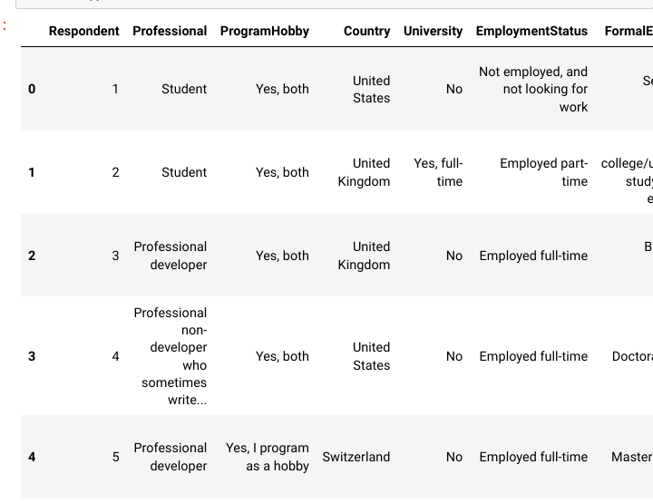
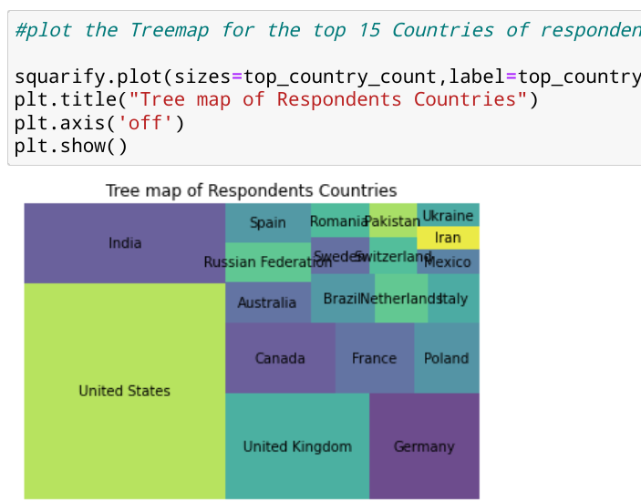
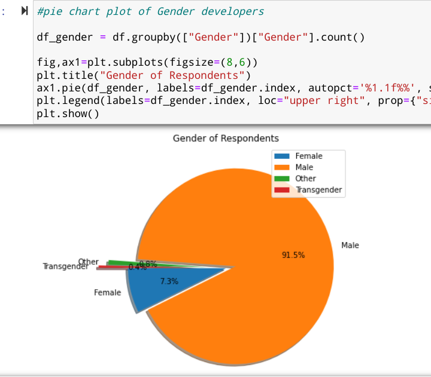
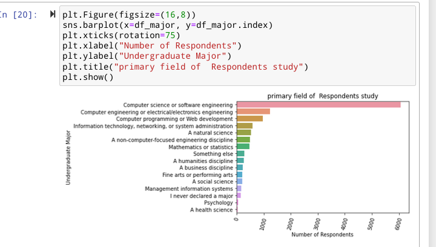
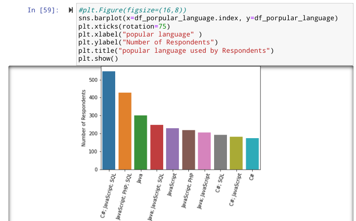
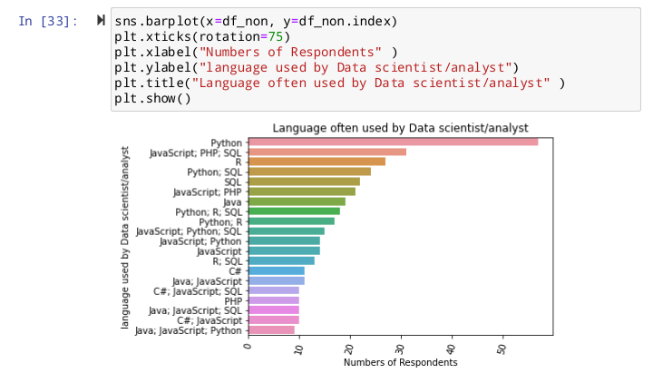
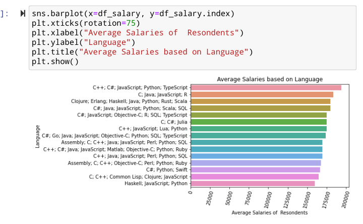

Project information
- Category: Data Analysis
- Project date: 01, August 2022
- GitHub URL: GitHub project page
- Tableau URL: Tableau Dashboard
Stack Overflow is an online question-and-answer site for programmers. Started in fall 2008, its rich feature set brought rapid popularity: users can ask and answer questions, collaboratively tag and edit questions, vote on the quality of answers, and post comments on individual questions and answers. The stack overflow survey is an annual survey that examines all aspects of a developers’ experience such as favorite technologies, work preferences, career satisfaction and education background. With nearly 60K responses from more than 170 countries.
Basis
What are the most popular IDEs? What aspects do software developers pay attention to when applying for a new job? What determines people’s job satisfaction? To answer these questions, I dug into the 2017 Stack Overflow survey and discovered some interesting results. I choose the 2017 survey instead of the latest one because it contains more relevant numerical information which I can use to perform model analysis. The survey was sent out to over 60k developers around the world through sites related to Stack Overflow, and the response rate was around 57%. Here are a few things I wanted to find out about the survey:
-
The demographic of the respondents and the spread of programming community across different geographical location.
-
What kind of programming skills, experience, and preferences is distributed across the globe.
-
Salaries analysis of respondent.
I also threw in a Tableau dashboard into the mix to allow you to explore the results of my analysis by Country
Libraries/Tools Used In Exploration:
The analysis was carried out using python and python libraries such as NumPy and pandas to get the desired data by doing altercation and manipulation on the data, GEOPY for location geocoding, seaborn and matplotlib for visualization and also made uses of other built in library as shown in my Jupiter Notebook
Data Cleaning and Processing
A vast amount of Data scientist or analyst time revolves around this step cause missing values are always a big issues to data project. All the "NAN" value in this data were not drop at once cause this will affect the data significantly. hence some column "NAN" will be replace by the mean of the column data while some will be drop. For example , the “NAN “ value in the column “country” were replaced with United States(the country with the highest number of Respondents) because dropping all the NAN value in this column will affect the data tremendously, also the NAN value in the column “Salary” were replaced with the average of the salaries.
Exploratory Analysis and Visualization:
Before deep diving into our exploratory analysis and visualization , let’s take a look at our Location Geocoding.
Location Geocoding:
For my final dashboard, I wanted to add a map that shows the developer data in each country. To do that, Tableau needs basic geographic information. To further retrieve my longitude and Latitude data from each country, I made use of GEOPY, a library in python that takes a country name as input and produce the corresponding longitude and Latitude as output. from our data cleaning we see that United States has the highest number of count value, hence I replace all the row in the country column with data that can not be analyze by geopy to produce Latitude and Longitude with United States.
Exploratory
we needed to ask interesting questions about the survey responses, as this would help to understand what the demographics i.e. country, age, gender, education level, employment level, etc. of the respondents look like.
Country
Let's look at the number of countries from which there are responses in the survey, and plot the 15 countries with the highest number of responses.
It appears the that a disproportionately high number of respondents are from USA & India — which one might expect since these countries have the highest populations (apart from China) .
Gender
Let’s look at the distribution of responses for the Gender. It’s a well-known fact that women and non-binary genders are underrepresented in the programming community, so we might expect to see a skewed distribution here..
Only about 8.5% of survey respondents who have answered the question identity as women or non-binary. This number is lower than the overall percentage of women & non-binary genders in the programming community which is estimated to be around 12%.
Education Level
Formal education in computer science is often considered an important requirement of becoming a programmer. Let’s see if this indeed the case, especially since there are many free resources & tutorials available online to learn to program.

It appears that well over half of the respondents hold a bachelor’s or master’s degree, so most programmers definitely seem to have some college education, although it’s not clear from this graph alone if they hold a degree in computer science.
Let’s analyze what’s the primary field of study among the respondent
It turns that a good numbers of programmers holding a college degree have a field of study other than computer science — which is very encouraging. This seems to suggest that while a college education is helpful in general, you do not need to pursue a major in computer science to become a successful programmer.
Most popular programming languages in 2017
Perhaps not surprising Javascript C#, Javascript and SQL comes out at the top as it is the most sought skills today and it’s also happened to be one of the easiest to get started with. SQL is necessary for working with relational databases, so it’s no surprise that most programmers work with SQL on a regular basis. For other forms of development, java seems to be the popular choice in 2017 as Java, which was the industry standard for server & application development for over 2 decades
Languages used by data scientists
no surprise that the majority of them use python and at second position SQL for data science/analysis and recently javascript has also been gaining importance in data science.
Average salaries of developers
Average Salaries of developers range between 175k to 200k and it’s not surprising that C++, C#, JavaScript, Python and Typescript are the highest because they are the most sort after skill in a developer in the tech world
Salaries model analysis
In order to carry out the salary model analysis based on the numerical details provided in the 2017 developers survey , I first of all did a heat map chart to find the correlation between all the numerical variables and from the chart , it is evident that CareerSatisfaction with a correlation Salary fit of 0.08 is the best fit according to the data to predict programmer's salaries.
- I made used of simple linear regression model which gave a prediction fit of Salary = 33382.80846157742 + 2788.3408063 * CareerSatisfaction.
- I also made used of multiple linear regression model which gave a prediction fit of Salary = 60439.94008888537 + 3469.89263979CareerSatisfaction -610.08510888JobSatisfaction -818.51499385HoursPerWeek -3059.47010683StackOverflowSatisfaction
- I also carried out a polynomial model analysis on salaries prediction
After further analysis, evaluation and Comparing these three models with R-square and Mean-Square-Error evaluation , i came to the conclusion that multiple linear regression model is the best model to be able to predict salary from values given in our dataset.
Word frequency in "StackOverflowDescribe" column
For this part of the analysis, I used the WordCloud library to generate a Word Cloud image based on the frequency of words used in the column. The Word Cloud shows the words with a higher frequency in larger text sizes.
Interactive Tableau Dashboard

To help readers explore my analysis to a greater depth, I made use of Tableau to create a user-friendly interactive dashboard. This allows you to explore the results by Country and so much more. Please note that while the dashboard can be viewed on any device, it is preferable to view it with a Tablet or a Computer.
Inference and Conclusion
We’ve drawn many interesting inferences from the survey, here’s a summary of the few of them:
- Based on the demographics of the survey respondents, we can infer that the survey is somewhat representative of the overall programming community, although it definitely has fewer responses from programmers who are women & non-binary genders.
- Most programmers hold a college degree, although a fairly large percentage did not have computer science as their major in college, so a computer science degree isn’t compulsory for learning to code or building a career in programming.
- JavaScript, C#, Java and SQL were the most used languages by professional developer, followed by python in 2017.
- The average salaries range is between ~150K to ~180K. Most popular languages as JavaScript, C#, Java, SQL and Python we found in the first question seem to be in the middle of the range, and that’s expected! because the more people who knows that language mean less rareness.
- From the model analysis of Salary prediction from the given numerical data in the 2017 dataset , it was shown that CareerSatisfaction has the highest correlation fit with salary and multiple linear regression model is the best fit to predict salary of developers from the given data. .
REMARK
All the references used were hyperlinked within the article. For the complete Python code written on Jupyter Notebook, GitHub, Tableau Dashboard and my social media pages, please use the links below: